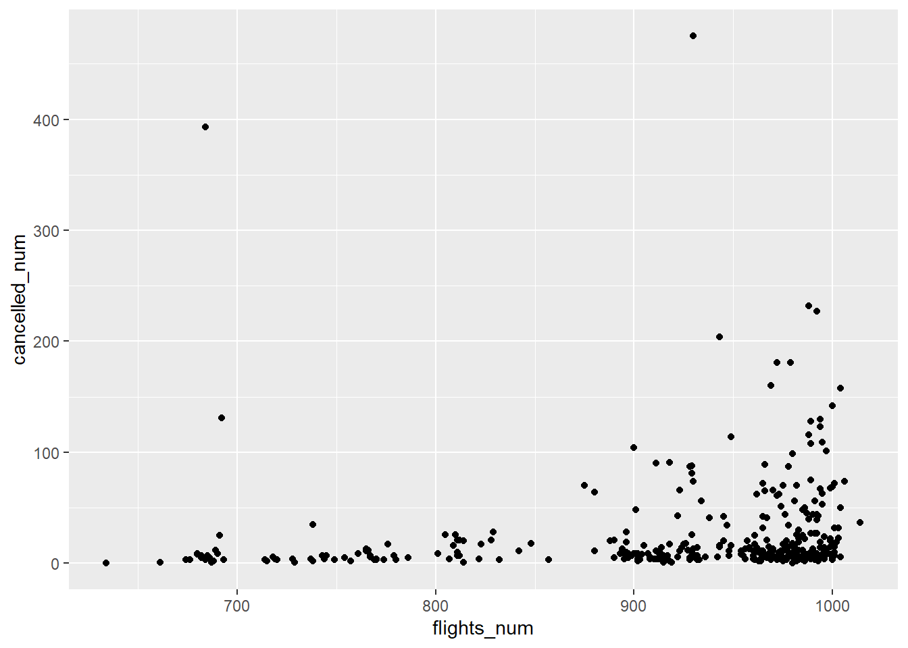
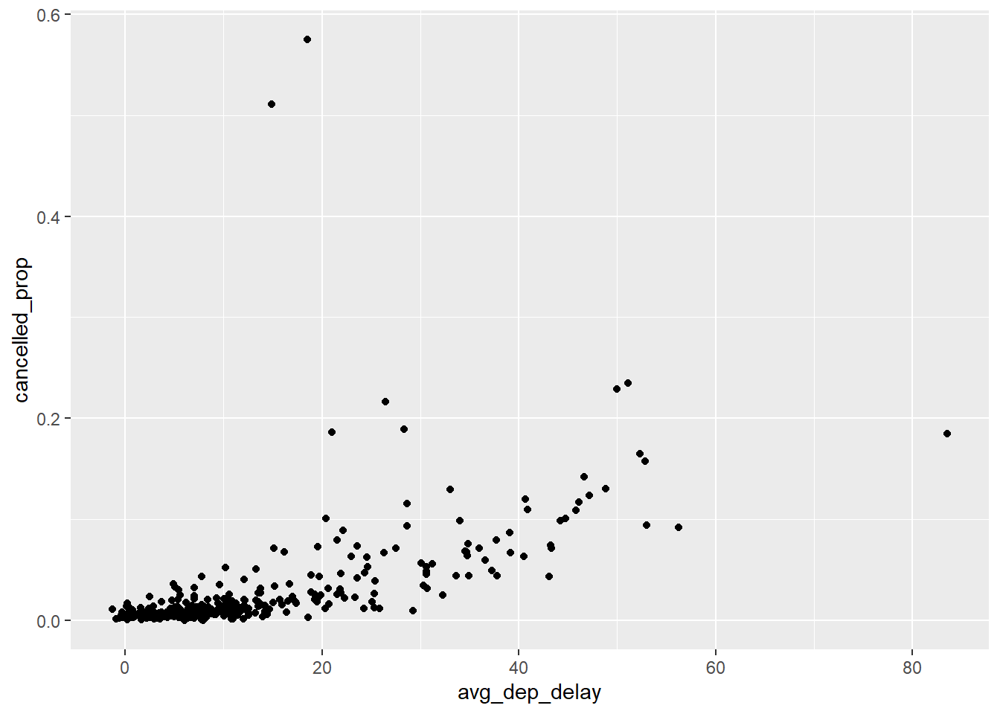
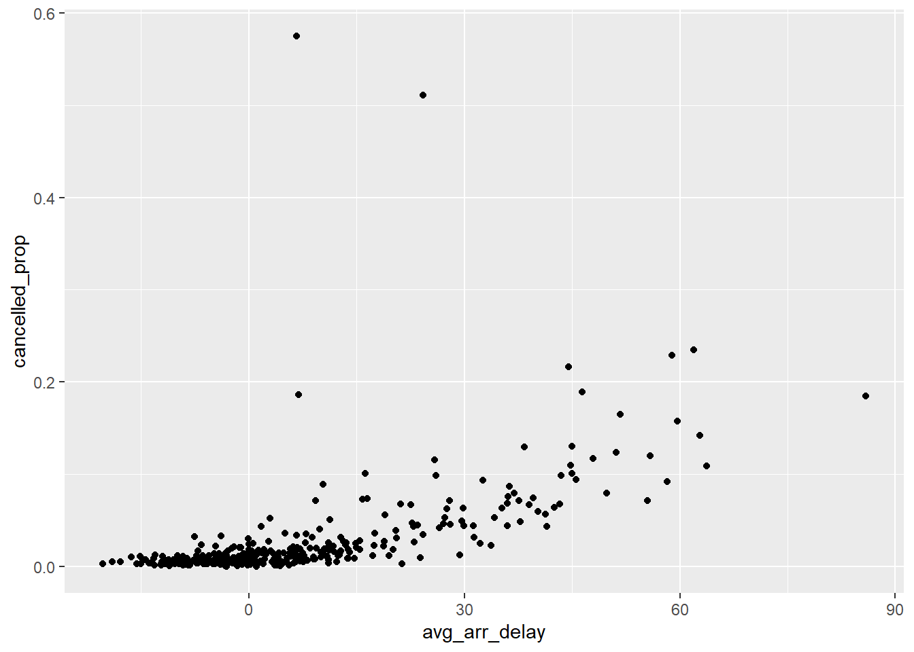

3 Transformaciones
3.1 Datos
Vamos a trabajar con el data frame nycflights13::flights. Una vez más ten en cuanta los “conflictos” y asegúrate de usar la función correcta (paquete_correcto::fun_repetida(...)).
library(nycflights13)
library(tidyverse)
flights## # A tibble: 336,776 x 19
## year month day dep_time sched_dep_time dep_delay arr_time sched_arr_time
## <int> <int> <int> <int> <int> <dbl> <int> <int>
## 1 2013 1 1 517 515 2 830 819
## 2 2013 1 1 533 529 4 850 830
## 3 2013 1 1 542 540 2 923 850
## 4 2013 1 1 544 545 -1 1004 1022
## 5 2013 1 1 554 600 -6 812 837
## 6 2013 1 1 554 558 -4 740 728
## 7 2013 1 1 555 600 -5 913 854
## 8 2013 1 1 557 600 -3 709 723
## 9 2013 1 1 557 600 -3 838 846
## 10 2013 1 1 558 600 -2 753 745
## # ... with 336,766 more rows, and 11 more variables: arr_delay <dbl>,
## # carrier <chr>, flight <int>, tailnum <chr>, origin <chr>, dest <chr>,
## # air_time <dbl>, distance <dbl>, hour <dbl>, minute <dbl>, time_hour <dttm>3.1.0.1 Ejercicios
- ¿Puedes identificar los tipos de variables?
R/
Al imprimir un tibble en la consola, se muestra el tipo de variable debajo de cada columna: <int>, <dbl>, <chr>, etc.
- ¿Qué información puedes extraer de los datos con la función
summary()?
R/
summary(flights)## year month day dep_time sched_dep_time
## Min. :2013 Min. : 1.000 Min. : 1.00 Min. : 1 Min. : 106
## 1st Qu.:2013 1st Qu.: 4.000 1st Qu.: 8.00 1st Qu.: 907 1st Qu.: 906
## Median :2013 Median : 7.000 Median :16.00 Median :1401 Median :1359
## Mean :2013 Mean : 6.549 Mean :15.71 Mean :1349 Mean :1344
## 3rd Qu.:2013 3rd Qu.:10.000 3rd Qu.:23.00 3rd Qu.:1744 3rd Qu.:1729
## Max. :2013 Max. :12.000 Max. :31.00 Max. :2400 Max. :2359
## NA's :8255
## dep_delay arr_time sched_arr_time arr_delay
## Min. : -43.00 Min. : 1 Min. : 1 Min. : -86.000
## 1st Qu.: -5.00 1st Qu.:1104 1st Qu.:1124 1st Qu.: -17.000
## Median : -2.00 Median :1535 Median :1556 Median : -5.000
## Mean : 12.64 Mean :1502 Mean :1536 Mean : 6.895
## 3rd Qu.: 11.00 3rd Qu.:1940 3rd Qu.:1945 3rd Qu.: 14.000
## Max. :1301.00 Max. :2400 Max. :2359 Max. :1272.000
## NA's :8255 NA's :8713 NA's :9430
## carrier flight tailnum origin
## Length:336776 Min. : 1 Length:336776 Length:336776
## Class :character 1st Qu.: 553 Class :character Class :character
## Mode :character Median :1496 Mode :character Mode :character
## Mean :1972
## 3rd Qu.:3465
## Max. :8500
##
## dest air_time distance hour
## Length:336776 Min. : 20.0 Min. : 17 Min. : 1.00
## Class :character 1st Qu.: 82.0 1st Qu.: 502 1st Qu.: 9.00
## Mode :character Median :129.0 Median : 872 Median :13.00
## Mean :150.7 Mean :1040 Mean :13.18
## 3rd Qu.:192.0 3rd Qu.:1389 3rd Qu.:17.00
## Max. :695.0 Max. :4983 Max. :23.00
## NA's :9430
## minute time_hour
## Min. : 0.00 Min. :2013-01-01 05:00:00
## 1st Qu.: 8.00 1st Qu.:2013-04-04 13:00:00
## Median :29.00 Median :2013-07-03 10:00:00
## Mean :26.23 Mean :2013-07-03 05:22:54
## 3rd Qu.:44.00 3rd Qu.:2013-10-01 07:00:00
## Max. :59.00 Max. :2013-12-31 23:00:00
## 3.2 El paquete dplyr
El objetivo ahora es asimilar las transformaciones de datos que ofrece dplyr:
- Filtrar observaciones (filas) con
filter(), - Reordenar observaciones (filas) con
arrange(), - Seleccionar variables (columnas) con
select(), - Crear nuevas variables (columnas) aplicando transformaciones (funciones) a las ya existentes con
mutate(), - Resumir la información de muchos valores con
summarise(), - … puede ser usado con
group_by()que agrupa las observaciones de acuerdo a cierta variable categórica.
3.2.1 Filtrar filas
Con filter() podemos filtrar/extraer las observaciones de acuerdo a características de una o varias variables, usando los operadores de comparación lógicos. Por ejemplo, para filtrar todos los vuelos ocurridos en los 1eros de Enero:
filter(flights, month == 1, day == 1)## # A tibble: 842 x 19
## year month day dep_time sched_dep_time dep_delay arr_time sched_arr_time
## <int> <int> <int> <int> <int> <dbl> <int> <int>
## 1 2013 1 1 517 515 2 830 819
## 2 2013 1 1 533 529 4 850 830
## 3 2013 1 1 542 540 2 923 850
## 4 2013 1 1 544 545 -1 1004 1022
## 5 2013 1 1 554 600 -6 812 837
## 6 2013 1 1 554 558 -4 740 728
## 7 2013 1 1 555 600 -5 913 854
## 8 2013 1 1 557 600 -3 709 723
## 9 2013 1 1 557 600 -3 838 846
## 10 2013 1 1 558 600 -2 753 745
## # ... with 832 more rows, and 11 more variables: arr_delay <dbl>,
## # carrier <chr>, flight <int>, tailnum <chr>, origin <chr>, dest <chr>,
## # air_time <dbl>, distance <dbl>, hour <dbl>, minute <dbl>, time_hour <dttm>Todos los vuelos de Enero a Febrero:
# nivel: "beginner"
flights_1_2 <- filter(flights, month == 1 | month == 2)
# nivel: "beginner" adelantado
flights_1_2 <- filter(flights, month %in% c(1, 2))
# nivel: "tidyverser" :)
flights_1_2 <- flights %>%
filter(month %in% c(1, 2))Vuelos que no se han retrasado más de 2hrs (tanto salida como llegada):
not_delayed <- filter(flights, arr_delay <= 120, dep_delay <= 120)Algo interesante de filter() es que deja fuera directamente los NAs.
3.2.1.1 Ejercicios:
- Encontrar los vuelos (asignar a una nueva variable que nombres apropiadamente):
- Se atrasaron más de 2hrs en llegar
- Volaron a Houston (IAH or HOU)
- Fueron operados por “United”, “American” o “Deta”
- Salieron en el verano (Julio, Agosto y Septiembre)
- Llegaron más de 2hrs tarde, pero no salieron tarde
- Se retrasaron al menos 1hr, pero compesaron 30min en vuelo
- Salieron entre medianoche y 6am (inclusive)
R/
- Se atrasaron más de 2hrs en llegar
filter(flights, arr_delay >= 120)## # A tibble: 10,200 x 19
## year month day dep_time sched_dep_time dep_delay arr_time sched_arr_time
## <int> <int> <int> <int> <int> <dbl> <int> <int>
## 1 2013 1 1 811 630 101 1047 830
## 2 2013 1 1 848 1835 853 1001 1950
## 3 2013 1 1 957 733 144 1056 853
## 4 2013 1 1 1114 900 134 1447 1222
## 5 2013 1 1 1505 1310 115 1638 1431
## 6 2013 1 1 1525 1340 105 1831 1626
## 7 2013 1 1 1549 1445 64 1912 1656
## 8 2013 1 1 1558 1359 119 1718 1515
## 9 2013 1 1 1732 1630 62 2028 1825
## 10 2013 1 1 1803 1620 103 2008 1750
## # ... with 10,190 more rows, and 11 more variables: arr_delay <dbl>,
## # carrier <chr>, flight <int>, tailnum <chr>, origin <chr>, dest <chr>,
## # air_time <dbl>, distance <dbl>, hour <dbl>, minute <dbl>, time_hour <dttm>- Volaron a Houston (IAH or HOU)
filter(flights, dest == "IAH" | dest == "HOU")## # A tibble: 9,313 x 19
## year month day dep_time sched_dep_time dep_delay arr_time sched_arr_time
## <int> <int> <int> <int> <int> <dbl> <int> <int>
## 1 2013 1 1 517 515 2 830 819
## 2 2013 1 1 533 529 4 850 830
## 3 2013 1 1 623 627 -4 933 932
## 4 2013 1 1 728 732 -4 1041 1038
## 5 2013 1 1 739 739 0 1104 1038
## 6 2013 1 1 908 908 0 1228 1219
## 7 2013 1 1 1028 1026 2 1350 1339
## 8 2013 1 1 1044 1045 -1 1352 1351
## 9 2013 1 1 1114 900 134 1447 1222
## 10 2013 1 1 1205 1200 5 1503 1505
## # ... with 9,303 more rows, and 11 more variables: arr_delay <dbl>,
## # carrier <chr>, flight <int>, tailnum <chr>, origin <chr>, dest <chr>,
## # air_time <dbl>, distance <dbl>, hour <dbl>, minute <dbl>, time_hour <dttm>- Fueron operados por “United”, “American” o “Deta”
filter(flights, carrier %in% c("AA", "DL", "UA"))## # A tibble: 139,504 x 19
## year month day dep_time sched_dep_time dep_delay arr_time sched_arr_time
## <int> <int> <int> <int> <int> <dbl> <int> <int>
## 1 2013 1 1 517 515 2 830 819
## 2 2013 1 1 533 529 4 850 830
## 3 2013 1 1 542 540 2 923 850
## 4 2013 1 1 554 600 -6 812 837
## 5 2013 1 1 554 558 -4 740 728
## 6 2013 1 1 558 600 -2 753 745
## 7 2013 1 1 558 600 -2 924 917
## 8 2013 1 1 558 600 -2 923 937
## 9 2013 1 1 559 600 -1 941 910
## 10 2013 1 1 559 600 -1 854 902
## # ... with 139,494 more rows, and 11 more variables: arr_delay <dbl>,
## # carrier <chr>, flight <int>, tailnum <chr>, origin <chr>, dest <chr>,
## # air_time <dbl>, distance <dbl>, hour <dbl>, minute <dbl>, time_hour <dttm>- Salieron en el verano (Julio, Agosto y Septiembre)
filter(flights, month >= 7, month <= 9)## # A tibble: 86,326 x 19
## year month day dep_time sched_dep_time dep_delay arr_time sched_arr_time
## <int> <int> <int> <int> <int> <dbl> <int> <int>
## 1 2013 7 1 1 2029 212 236 2359
## 2 2013 7 1 2 2359 3 344 344
## 3 2013 7 1 29 2245 104 151 1
## 4 2013 7 1 43 2130 193 322 14
## 5 2013 7 1 44 2150 174 300 100
## 6 2013 7 1 46 2051 235 304 2358
## 7 2013 7 1 48 2001 287 308 2305
## 8 2013 7 1 58 2155 183 335 43
## 9 2013 7 1 100 2146 194 327 30
## 10 2013 7 1 100 2245 135 337 135
## # ... with 86,316 more rows, and 11 more variables: arr_delay <dbl>,
## # carrier <chr>, flight <int>, tailnum <chr>, origin <chr>, dest <chr>,
## # air_time <dbl>, distance <dbl>, hour <dbl>, minute <dbl>, time_hour <dttm>- Llegaron más de 2hrs tarde, pero no salieron tarde
filter(flights, arr_delay > 120, dep_delay <= 0)## # A tibble: 29 x 19
## year month day dep_time sched_dep_time dep_delay arr_time sched_arr_time
## <int> <int> <int> <int> <int> <dbl> <int> <int>
## 1 2013 1 27 1419 1420 -1 1754 1550
## 2 2013 10 7 1350 1350 0 1736 1526
## 3 2013 10 7 1357 1359 -2 1858 1654
## 4 2013 10 16 657 700 -3 1258 1056
## 5 2013 11 1 658 700 -2 1329 1015
## 6 2013 3 18 1844 1847 -3 39 2219
## 7 2013 4 17 1635 1640 -5 2049 1845
## 8 2013 4 18 558 600 -2 1149 850
## 9 2013 4 18 655 700 -5 1213 950
## 10 2013 5 22 1827 1830 -3 2217 2010
## # ... with 19 more rows, and 11 more variables: arr_delay <dbl>, carrier <chr>,
## # flight <int>, tailnum <chr>, origin <chr>, dest <chr>, air_time <dbl>,
## # distance <dbl>, hour <dbl>, minute <dbl>, time_hour <dttm>- Se retrasaron al menos 1hr, pero compesaron 30min en vuelo
filter(flights, dep_delay >= 60, dep_delay - arr_delay > 30)## # A tibble: 1,844 x 19
## year month day dep_time sched_dep_time dep_delay arr_time sched_arr_time
## <int> <int> <int> <int> <int> <dbl> <int> <int>
## 1 2013 1 1 2205 1720 285 46 2040
## 2 2013 1 1 2326 2130 116 131 18
## 3 2013 1 3 1503 1221 162 1803 1555
## 4 2013 1 3 1839 1700 99 2056 1950
## 5 2013 1 3 1850 1745 65 2148 2120
## 6 2013 1 3 1941 1759 102 2246 2139
## 7 2013 1 3 1950 1845 65 2228 2227
## 8 2013 1 3 2015 1915 60 2135 2111
## 9 2013 1 3 2257 2000 177 45 2224
## 10 2013 1 4 1917 1700 137 2135 1950
## # ... with 1,834 more rows, and 11 more variables: arr_delay <dbl>,
## # carrier <chr>, flight <int>, tailnum <chr>, origin <chr>, dest <chr>,
## # air_time <dbl>, distance <dbl>, hour <dbl>, minute <dbl>, time_hour <dttm>- Salieron entre medianoche y 6am (inclusive). No
# Opción 1:
filter(flights, dep_time <= 600 | dep_time == 2400)## # A tibble: 9,373 x 19
## year month day dep_time sched_dep_time dep_delay arr_time sched_arr_time
## <int> <int> <int> <int> <int> <dbl> <int> <int>
## 1 2013 1 1 517 515 2 830 819
## 2 2013 1 1 533 529 4 850 830
## 3 2013 1 1 542 540 2 923 850
## 4 2013 1 1 544 545 -1 1004 1022
## 5 2013 1 1 554 600 -6 812 837
## 6 2013 1 1 554 558 -4 740 728
## 7 2013 1 1 555 600 -5 913 854
## 8 2013 1 1 557 600 -3 709 723
## 9 2013 1 1 557 600 -3 838 846
## 10 2013 1 1 558 600 -2 753 745
## # ... with 9,363 more rows, and 11 more variables: arr_delay <dbl>,
## # carrier <chr>, flight <int>, tailnum <chr>, origin <chr>, dest <chr>,
## # air_time <dbl>, distance <dbl>, hour <dbl>, minute <dbl>, time_hour <dttm># Opción 2:
filter(flights, dep_time %% 2400 <= 600)## # A tibble: 9,373 x 19
## year month day dep_time sched_dep_time dep_delay arr_time sched_arr_time
## <int> <int> <int> <int> <int> <dbl> <int> <int>
## 1 2013 1 1 517 515 2 830 819
## 2 2013 1 1 533 529 4 850 830
## 3 2013 1 1 542 540 2 923 850
## 4 2013 1 1 544 545 -1 1004 1022
## 5 2013 1 1 554 600 -6 812 837
## 6 2013 1 1 554 558 -4 740 728
## 7 2013 1 1 555 600 -5 913 854
## 8 2013 1 1 557 600 -3 709 723
## 9 2013 1 1 557 600 -3 838 846
## 10 2013 1 1 558 600 -2 753 745
## # ... with 9,363 more rows, and 11 more variables: arr_delay <dbl>,
## # carrier <chr>, flight <int>, tailnum <chr>, origin <chr>, dest <chr>,
## # air_time <dbl>, distance <dbl>, hour <dbl>, minute <dbl>, time_hour <dttm>- Busca la ayuda de
between()e intenta simplificar un poco tus respuestas al ejercicio anterior.
R/
La expresión between(x, left, right) es equivalente a x >= left & x <= right. En el ejercicio “d. Salieron en el verano (Julio, Agosto y Septiembre)”, podemos hacer:
filter(flights, between(month, 7, 9))## # A tibble: 86,326 x 19
## year month day dep_time sched_dep_time dep_delay arr_time sched_arr_time
## <int> <int> <int> <int> <int> <dbl> <int> <int>
## 1 2013 7 1 1 2029 212 236 2359
## 2 2013 7 1 2 2359 3 344 344
## 3 2013 7 1 29 2245 104 151 1
## 4 2013 7 1 43 2130 193 322 14
## 5 2013 7 1 44 2150 174 300 100
## 6 2013 7 1 46 2051 235 304 2358
## 7 2013 7 1 48 2001 287 308 2305
## 8 2013 7 1 58 2155 183 335 43
## 9 2013 7 1 100 2146 194 327 30
## 10 2013 7 1 100 2245 135 337 135
## # ... with 86,316 more rows, and 11 more variables: arr_delay <dbl>,
## # carrier <chr>, flight <int>, tailnum <chr>, origin <chr>, dest <chr>,
## # air_time <dbl>, distance <dbl>, hour <dbl>, minute <dbl>, time_hour <dttm>- ¿Cuántos vuelos no tienen información sobre
dep_time? ¿Alguna otra variable tiene datos perdidos? ¿Qué crees que representan en cada caso?
R/
Parecen ser vuelos cancelados, también arr_time presenta NAs en estos casos:
filter(flights, is.na(dep_time))## # A tibble: 8,255 x 19
## year month day dep_time sched_dep_time dep_delay arr_time sched_arr_time
## <int> <int> <int> <int> <int> <dbl> <int> <int>
## 1 2013 1 1 NA 1630 NA NA 1815
## 2 2013 1 1 NA 1935 NA NA 2240
## 3 2013 1 1 NA 1500 NA NA 1825
## 4 2013 1 1 NA 600 NA NA 901
## 5 2013 1 2 NA 1540 NA NA 1747
## 6 2013 1 2 NA 1620 NA NA 1746
## 7 2013 1 2 NA 1355 NA NA 1459
## 8 2013 1 2 NA 1420 NA NA 1644
## 9 2013 1 2 NA 1321 NA NA 1536
## 10 2013 1 2 NA 1545 NA NA 1910
## # ... with 8,245 more rows, and 11 more variables: arr_delay <dbl>,
## # carrier <chr>, flight <int>, tailnum <chr>, origin <chr>, dest <chr>,
## # air_time <dbl>, distance <dbl>, hour <dbl>, minute <dbl>, time_hour <dttm>- ¿Qué crees de los siguientes resultados?
NA^0 # R/ todo x^0 = 1## [1] 1NA | TRUE # R/## [1] TRUEFALSE & NA## [1] FALSENA * 0## [1] NAR/
* NA^0 es 0 porque \(x^0 = 1\) para todo \(x\).
* NA | TRUE es NA | TRUE porque si el valor faltante fuera TRUE: entonces TRUE | TRUE == TRUE. Si el faltante es FALSE, entonces FALSE | TRUE == TRUE.
* FALSE & NA es FALSE. Si el NA es TRUE: TRUE & FALSE == FALSE. Si el NA fuera FALSE: FALSE & FALSE == FALSE.
* NA * 0 es 0, porque tiene en cuenta las indeterminaciones \(\pm \infty \times 0\), en cuyo caso el resultdo sería NaN. Para cualquier \(x\neq \pm \infty\) tendríamos x * 0 == 0.
3.2.2 Rerodenar filas
Con arrange() podemos ordenar las observaciones (filas) de nuestros data frame, de acuerdo a una o más variables (columnas). En general, la ordenación se hará de acuerdo a la primera variable y el resto se usará en caso de “empate”. Por defecto, la ordenación es ascendente y los NA se colocan al final:
fl_asc <- arrange(flights, year, month, day, dep_time)
head(fl_asc, 7)## # A tibble: 7 x 19
## year month day dep_time sched_dep_time dep_delay arr_time sched_arr_time
## <int> <int> <int> <int> <int> <dbl> <int> <int>
## 1 2013 1 1 517 515 2 830 819
## 2 2013 1 1 533 529 4 850 830
## 3 2013 1 1 542 540 2 923 850
## 4 2013 1 1 544 545 -1 1004 1022
## 5 2013 1 1 554 600 -6 812 837
## 6 2013 1 1 554 558 -4 740 728
## 7 2013 1 1 555 600 -5 913 854
## # ... with 11 more variables: arr_delay <dbl>, carrier <chr>, flight <int>,
## # tailnum <chr>, origin <chr>, dest <chr>, air_time <dbl>, distance <dbl>,
## # hour <dbl>, minute <dbl>, time_hour <dttm>tail(fl_asc, 7)## # A tibble: 7 x 19
## year month day dep_time sched_dep_time dep_delay arr_time sched_arr_time
## <int> <int> <int> <int> <int> <dbl> <int> <int>
## 1 2013 12 31 NA 1430 NA NA 1750
## 2 2013 12 31 NA 855 NA NA 1142
## 3 2013 12 31 NA 705 NA NA 931
## 4 2013 12 31 NA 825 NA NA 1029
## 5 2013 12 31 NA 1615 NA NA 1800
## 6 2013 12 31 NA 600 NA NA 735
## 7 2013 12 31 NA 830 NA NA 1154
## # ... with 11 more variables: arr_delay <dbl>, carrier <chr>, flight <int>,
## # tailnum <chr>, origin <chr>, dest <chr>, air_time <dbl>, distance <dbl>,
## # hour <dbl>, minute <dbl>, time_hour <dttm>Orden descendente, de acuerdo a dep_time:
fl_dsc <- arrange(flights, desc(dep_time))
head(fl_dsc, 7)## # A tibble: 7 x 19
## year month day dep_time sched_dep_time dep_delay arr_time sched_arr_time
## <int> <int> <int> <int> <int> <dbl> <int> <int>
## 1 2013 10 30 2400 2359 1 327 337
## 2 2013 11 27 2400 2359 1 515 445
## 3 2013 12 5 2400 2359 1 427 440
## 4 2013 12 9 2400 2359 1 432 440
## 5 2013 12 9 2400 2250 70 59 2356
## 6 2013 12 13 2400 2359 1 432 440
## 7 2013 12 19 2400 2359 1 434 440
## # ... with 11 more variables: arr_delay <dbl>, carrier <chr>, flight <int>,
## # tailnum <chr>, origin <chr>, dest <chr>, air_time <dbl>, distance <dbl>,
## # hour <dbl>, minute <dbl>, time_hour <dttm>3.2.2.1 Ejercicios
- Si por defecto
arrange()coloca losNAal final, ¿hay alguna forma de colocarlos al inicio? Hint: usais.na().
R/
arrange(flights, desc(is.na(dep_time)), dep_time)## # A tibble: 336,776 x 19
## year month day dep_time sched_dep_time dep_delay arr_time sched_arr_time
## <int> <int> <int> <int> <int> <dbl> <int> <int>
## 1 2013 1 1 NA 1630 NA NA 1815
## 2 2013 1 1 NA 1935 NA NA 2240
## 3 2013 1 1 NA 1500 NA NA 1825
## 4 2013 1 1 NA 600 NA NA 901
## 5 2013 1 2 NA 1540 NA NA 1747
## 6 2013 1 2 NA 1620 NA NA 1746
## 7 2013 1 2 NA 1355 NA NA 1459
## 8 2013 1 2 NA 1420 NA NA 1644
## 9 2013 1 2 NA 1321 NA NA 1536
## 10 2013 1 2 NA 1545 NA NA 1910
## # ... with 336,766 more rows, and 11 more variables: arr_delay <dbl>,
## # carrier <chr>, flight <int>, tailnum <chr>, origin <chr>, dest <chr>,
## # air_time <dbl>, distance <dbl>, hour <dbl>, minute <dbl>, time_hour <dttm>- Ordena los vuelos para encontrar los que más se retrasaron.
R/
arrange(flights, desc(dep_delay))## # A tibble: 336,776 x 19
## year month day dep_time sched_dep_time dep_delay arr_time sched_arr_time
## <int> <int> <int> <int> <int> <dbl> <int> <int>
## 1 2013 1 9 641 900 1301 1242 1530
## 2 2013 6 15 1432 1935 1137 1607 2120
## 3 2013 1 10 1121 1635 1126 1239 1810
## 4 2013 9 20 1139 1845 1014 1457 2210
## 5 2013 7 22 845 1600 1005 1044 1815
## 6 2013 4 10 1100 1900 960 1342 2211
## 7 2013 3 17 2321 810 911 135 1020
## 8 2013 6 27 959 1900 899 1236 2226
## 9 2013 7 22 2257 759 898 121 1026
## 10 2013 12 5 756 1700 896 1058 2020
## # ... with 336,766 more rows, and 11 more variables: arr_delay <dbl>,
## # carrier <chr>, flight <int>, tailnum <chr>, origin <chr>, dest <chr>,
## # air_time <dbl>, distance <dbl>, hour <dbl>, minute <dbl>, time_hour <dttm>- Encuentra los que despegaron antes.
R/
arrange(flights, dep_delay)## # A tibble: 336,776 x 19
## year month day dep_time sched_dep_time dep_delay arr_time sched_arr_time
## <int> <int> <int> <int> <int> <dbl> <int> <int>
## 1 2013 12 7 2040 2123 -43 40 2352
## 2 2013 2 3 2022 2055 -33 2240 2338
## 3 2013 11 10 1408 1440 -32 1549 1559
## 4 2013 1 11 1900 1930 -30 2233 2243
## 5 2013 1 29 1703 1730 -27 1947 1957
## 6 2013 8 9 729 755 -26 1002 955
## 7 2013 10 23 1907 1932 -25 2143 2143
## 8 2013 3 30 2030 2055 -25 2213 2250
## 9 2013 3 2 1431 1455 -24 1601 1631
## 10 2013 5 5 934 958 -24 1225 1309
## # ... with 336,766 more rows, and 11 more variables: arr_delay <dbl>,
## # carrier <chr>, flight <int>, tailnum <chr>, origin <chr>, dest <chr>,
## # air_time <dbl>, distance <dbl>, hour <dbl>, minute <dbl>, time_hour <dttm>- Ordena los vuelos de forma tal que permita encuentra los de mayor velocidad.
R/
# Si lo entendemos por tiempo de vuelo:
head(arrange(flights, air_time))## # A tibble: 6 x 19
## year month day dep_time sched_dep_time dep_delay arr_time sched_arr_time
## <int> <int> <int> <int> <int> <dbl> <int> <int>
## 1 2013 1 16 1355 1315 40 1442 1411
## 2 2013 4 13 537 527 10 622 628
## 3 2013 12 6 922 851 31 1021 954
## 4 2013 2 3 2153 2129 24 2247 2224
## 5 2013 2 5 1303 1315 -12 1342 1411
## 6 2013 2 12 2123 2130 -7 2211 2225
## # ... with 11 more variables: arr_delay <dbl>, carrier <chr>, flight <int>,
## # tailnum <chr>, origin <chr>, dest <chr>, air_time <dbl>, distance <dbl>,
## # hour <dbl>, minute <dbl>, time_hour <dttm># Si lo entendemos por velocidad media:
head(arrange(flights, desc(distance / air_time)))## # A tibble: 6 x 19
## year month day dep_time sched_dep_time dep_delay arr_time sched_arr_time
## <int> <int> <int> <int> <int> <dbl> <int> <int>
## 1 2013 5 25 1709 1700 9 1923 1937
## 2 2013 7 2 1558 1513 45 1745 1719
## 3 2013 5 13 2040 2025 15 2225 2226
## 4 2013 3 23 1914 1910 4 2045 2043
## 5 2013 1 12 1559 1600 -1 1849 1917
## 6 2013 11 17 650 655 -5 1059 1150
## # ... with 11 more variables: arr_delay <dbl>, carrier <chr>, flight <int>,
## # tailnum <chr>, origin <chr>, dest <chr>, air_time <dbl>, distance <dbl>,
## # hour <dbl>, minute <dbl>, time_hour <dttm>- ¿Cuáles son los vuelos que mayor (menor) distancia recorrieron?
R/
# Mayor distancia:
arrange(flights, desc(distance))## # A tibble: 336,776 x 19
## year month day dep_time sched_dep_time dep_delay arr_time sched_arr_time
## <int> <int> <int> <int> <int> <dbl> <int> <int>
## 1 2013 1 1 857 900 -3 1516 1530
## 2 2013 1 2 909 900 9 1525 1530
## 3 2013 1 3 914 900 14 1504 1530
## 4 2013 1 4 900 900 0 1516 1530
## 5 2013 1 5 858 900 -2 1519 1530
## 6 2013 1 6 1019 900 79 1558 1530
## 7 2013 1 7 1042 900 102 1620 1530
## 8 2013 1 8 901 900 1 1504 1530
## 9 2013 1 9 641 900 1301 1242 1530
## 10 2013 1 10 859 900 -1 1449 1530
## # ... with 336,766 more rows, and 11 more variables: arr_delay <dbl>,
## # carrier <chr>, flight <int>, tailnum <chr>, origin <chr>, dest <chr>,
## # air_time <dbl>, distance <dbl>, hour <dbl>, minute <dbl>, time_hour <dttm># Menor distancia:
arrange(flights, distance)## # A tibble: 336,776 x 19
## year month day dep_time sched_dep_time dep_delay arr_time sched_arr_time
## <int> <int> <int> <int> <int> <dbl> <int> <int>
## 1 2013 7 27 NA 106 NA NA 245
## 2 2013 1 3 2127 2129 -2 2222 2224
## 3 2013 1 4 1240 1200 40 1333 1306
## 4 2013 1 4 1829 1615 134 1937 1721
## 5 2013 1 4 2128 2129 -1 2218 2224
## 6 2013 1 5 1155 1200 -5 1241 1306
## 7 2013 1 6 2125 2129 -4 2224 2224
## 8 2013 1 7 2124 2129 -5 2212 2224
## 9 2013 1 8 2127 2130 -3 2304 2225
## 10 2013 1 9 2126 2129 -3 2217 2224
## # ... with 336,766 more rows, and 11 more variables: arr_delay <dbl>,
## # carrier <chr>, flight <int>, tailnum <chr>, origin <chr>, dest <chr>,
## # air_time <dbl>, distance <dbl>, hour <dbl>, minute <dbl>, time_hour <dttm>3.2.3 Seleccionar variables
Con select() podemos justamente seleccionar variables (columnas) de interés.
# seleccionamos año, mes y día
flights %>%
select(year, month, day) %>%
head(5)## # A tibble: 5 x 3
## year month day
## <int> <int> <int>
## 1 2013 1 1
## 2 2013 1 1
## 3 2013 1 1
## 4 2013 1 1
## 5 2013 1 1# seleccionamos todas las columnas desde año (year) hasta día (day),
# ambas inclusive
flights %>%
select(year:day) %>%
head(5)## # A tibble: 5 x 3
## year month day
## <int> <int> <int>
## 1 2013 1 1
## 2 2013 1 1
## 3 2013 1 1
## 4 2013 1 1
## 5 2013 1 1# seleccionamos todas las columnas excepto las que van desde año (year)
# hasta día (day), ambas inclusive
flights %>%
select(-(year:day)) %>%
head(5)## # A tibble: 5 x 16
## dep_time sched_dep_time dep_delay arr_time sched_arr_time arr_delay carrier
## <int> <int> <dbl> <int> <int> <dbl> <chr>
## 1 517 515 2 830 819 11 UA
## 2 533 529 4 850 830 20 UA
## 3 542 540 2 923 850 33 AA
## 4 544 545 -1 1004 1022 -18 B6
## 5 554 600 -6 812 837 -25 DL
## # ... with 9 more variables: flight <int>, tailnum <chr>, origin <chr>,
## # dest <chr>, air_time <dbl>, distance <dbl>, hour <dbl>, minute <dbl>,
## # time_hour <dttm>También dispondremos de las “funciones de ayuda a la selección”:
starts_with("abc"): columnas que empiezan en “abc”.ends_with("xyz"): columnas que terminan en “xyz”.contains("ijk"): columnas que contienen la expresión “ijk”.matches(""[pt]xyz""): selecciona variables que coinciden con una expresión regular.num_range("x", 1:3): equivalente a seleccionr:paste0("x", 1:3).everuthing(): selecciona todas las variables. Útil si deseamos poner algunas columnas de interés al incio, porqueselect()no incluye columnas repetidas:
flights %>%
select(time_hour, air_time, everything()) %>%
head(5)## # A tibble: 5 x 19
## time_hour air_time year month day dep_time sched_dep_time
## <dttm> <dbl> <int> <int> <int> <int> <int>
## 1 2013-01-01 05:00:00 227 2013 1 1 517 515
## 2 2013-01-01 05:00:00 227 2013 1 1 533 529
## 3 2013-01-01 05:00:00 160 2013 1 1 542 540
## 4 2013-01-01 05:00:00 183 2013 1 1 544 545
## 5 2013-01-01 06:00:00 116 2013 1 1 554 600
## # ... with 12 more variables: dep_delay <dbl>, arr_time <int>,
## # sched_arr_time <int>, arr_delay <dbl>, carrier <chr>, flight <int>,
## # tailnum <chr>, origin <chr>, dest <chr>, distance <dbl>, hour <dbl>,
## # minute <dbl>3.2.3.1 Ejercicios
- ¿Cuál será la forma más corta de seleccionar:
dep_time,dep_delay,arr_time,arr_delay?
R/
# Opción elegante:
select(flights, starts_with("dep_"), starts_with("arr_"))## # A tibble: 336,776 x 4
## dep_time dep_delay arr_time arr_delay
## <int> <dbl> <int> <dbl>
## 1 517 2 830 11
## 2 533 4 850 20
## 3 542 2 923 33
## 4 544 -1 1004 -18
## 5 554 -6 812 -25
## 6 554 -4 740 12
## 7 555 -5 913 19
## 8 557 -3 709 -14
## 9 557 -3 838 -8
## 10 558 -2 753 8
## # ... with 336,766 more rows# Menos elegante, pero funcional y corta:
select(flights, 4, 6, 7, 9)## # A tibble: 336,776 x 4
## dep_time dep_delay arr_time arr_delay
## <int> <dbl> <int> <dbl>
## 1 517 2 830 11
## 2 533 4 850 20
## 3 542 2 923 33
## 4 544 -1 1004 -18
## 5 554 -6 812 -25
## 6 554 -4 740 12
## 7 555 -5 913 19
## 8 557 -3 709 -14
## 9 557 -3 838 -8
## 10 558 -2 753 8
## # ... with 336,766 more rows- Queremos seleccionar las variables indicadas en el vector
vars. Hint: usarany_of.
vars <- c("year", "month", "day", "dep_delay", "arr_delay")R/
select(flights, any_of(vars))## # A tibble: 336,776 x 5
## year month day dep_delay arr_delay
## <int> <int> <int> <dbl> <dbl>
## 1 2013 1 1 2 11
## 2 2013 1 1 4 20
## 3 2013 1 1 2 33
## 4 2013 1 1 -1 -18
## 5 2013 1 1 -6 -25
## 6 2013 1 1 -4 12
## 7 2013 1 1 -5 19
## 8 2013 1 1 -3 -14
## 9 2013 1 1 -3 -8
## 10 2013 1 1 -2 8
## # ... with 336,766 more rows- ¿Qué pasa con el siguiente código? ¿Debería seleccionar todas esas variables?
select(flights, contains("TiMe"))## # A tibble: 336,776 x 6
## dep_time sched_dep_time arr_time sched_arr_time air_time time_hour
## <int> <int> <int> <int> <dbl> <dttm>
## 1 517 515 830 819 227 2013-01-01 05:00:00
## 2 533 529 850 830 227 2013-01-01 05:00:00
## 3 542 540 923 850 160 2013-01-01 05:00:00
## 4 544 545 1004 1022 183 2013-01-01 05:00:00
## 5 554 600 812 837 116 2013-01-01 06:00:00
## 6 554 558 740 728 150 2013-01-01 05:00:00
## 7 555 600 913 854 158 2013-01-01 06:00:00
## 8 557 600 709 723 53 2013-01-01 06:00:00
## 9 557 600 838 846 140 2013-01-01 06:00:00
## 10 558 600 753 745 138 2013-01-01 06:00:00
## # ... with 336,766 more rowsR/
Para cambiar el resultado, podemos hacer que coincidan también las letras en mayúscula y minúsucula:
select(flights, contains("TiMe", ignore.case = FALSE))## # A tibble: 336,776 x 03.2.4 Crear nuevas variables
Con mutate() podemos añadir nuevas columnas a nuestro data frame. Estas columnas se crean al aplicar las funciones que conocemos (operaciones aritméticas, lags, acumulados, etc.) a las columnas ya existentes.
flights %>%
mutate(gain = dep_delay - arr_delay,
speed = distance / air_time * 60,
hours = air_time / 60,
gain_per_hour = gain / hours) %>% # ¡usamos las columnas nuevas!
select(gain, speed, hours, gain_per_hour, everything()) %>%
head(5)## # A tibble: 5 x 23
## gain speed hours gain_per_hour year month day dep_time sched_dep_time
## <dbl> <dbl> <dbl> <dbl> <int> <int> <int> <int> <int>
## 1 -9 370. 3.78 -2.38 2013 1 1 517 515
## 2 -16 374. 3.78 -4.23 2013 1 1 533 529
## 3 -31 408. 2.67 -11.6 2013 1 1 542 540
## 4 17 517. 3.05 5.57 2013 1 1 544 545
## 5 19 394. 1.93 9.83 2013 1 1 554 600
## # ... with 14 more variables: dep_delay <dbl>, arr_time <int>,
## # sched_arr_time <int>, arr_delay <dbl>, carrier <chr>, flight <int>,
## # tailnum <chr>, origin <chr>, dest <chr>, air_time <dbl>, distance <dbl>,
## # hour <dbl>, minute <dbl>, time_hour <dttm>Si solamente nos interesan las nuevas columnas que hemos creado, usamos transmute():
flights %>%
transmute(gain = dep_delay - arr_delay,
speed = distance / air_time * 60,
hours = air_time / 60,
gain_per_hour = gain / hours) %>% # ¡usamos las columnas nuevas!
head(5)## # A tibble: 5 x 4
## gain speed hours gain_per_hour
## <dbl> <dbl> <dbl> <dbl>
## 1 -9 370. 3.78 -2.38
## 2 -16 374. 3.78 -4.23
## 3 -31 408. 2.67 -11.6
## 4 17 517. 3.05 5.57
## 5 19 394. 1.93 9.833.2.4.1 Ejercicios
- Convertir
dep_timeysched_dep_timea minutos transcurridos desde la medianoche. Notar que son variables importantes pero con un formato difícil de trabajar (es complicado hacer operaciones artiméticas con ellos). Sigue las siguientes directrices:
- Una observación de
dep_timesería por ejemplo2021que indica las 20:21hrs (8:21pm). - Para obtener las horas transcurridas dede la medianoche hasta las 20:21hrs tendremos que usar la división entera
2021 %/% 100 == 20. Luego es fácil obtener los minutos multiplicando por 60. - Los 21 minutos restantes podemos obtenerlos con el resto de la división
2021 %% 100 == 21… no olvides sumar ambas cantidades - Finalmente, tendrás que lidiar con la medianoche, representada con
2400. Primero, comprueba a cuántos minutos corresponde según nuestras operaciones. Luego, considera calcular el resto de la división por esta cantidad de minutos (siempre quex <= yy ambos sean positivos, tendremosx %% y == 0).
R/
flights_times <- mutate(flights,
dep_time_mins = (dep_time %/% 100 * 60 + dep_time %% 100) %% 1440,
sched_dep_time_mins = (sched_dep_time %/% 100 * 60 +
sched_dep_time %% 100) %% 1440
)
select(
flights_times, dep_time, dep_time_mins, sched_dep_time,
sched_dep_time_mins
)## # A tibble: 336,776 x 4
## dep_time dep_time_mins sched_dep_time sched_dep_time_mins
## <int> <dbl> <int> <dbl>
## 1 517 317 515 315
## 2 533 333 529 329
## 3 542 342 540 340
## 4 544 344 545 345
## 5 554 354 600 360
## 6 554 354 558 358
## 7 555 355 600 360
## 8 557 357 600 360
## 9 557 357 600 360
## 10 558 358 600 360
## # ... with 336,766 more rows- Compara
air_timeconarr_time - dep_time. ¿Es necesaria hacer la transformación del ejercicio anterior? ¿Puedes encontrar en cuántos casosair_time != arr_time - dep_time? ¿Por qué pasa esto, no deberíamos obtener que el tiempo de vuelo es la diferencia entre la llegada y la salida?
R/
Calculamos primero tiempo de vuelo:
flights_airtime <-
mutate(flights,
dep_time = (dep_time %/% 100 * 60 + dep_time %% 100) %% 1440,
arr_time = (arr_time %/% 100 * 60 + arr_time %% 100) %% 1440,
air_time_diff = air_time - arr_time + dep_time
)Pero notamos que air_time != arr_time - dep_time lo cual no es intuitivo:
nrow(filter(flights_airtime, air_time_diff != 0))## [1] 327150La relación que sí se cumple es air_time <= arr_time - dep_time. El problema es que air_time solo cuenta el tiempo desde que desepega hasta que aterriza, sin contar el desplazamiento hasta la pista o el tiempo en alcanzar la velocidad apropiada antes de despegar.
- ¿Qué relación crees que habrá entre
dep_time,sched_dep_timeydep_delay? Encuentra el número de observaciones en las que no se cumple tu hipótesis.
R/
Esperaríamos que dep_time - sched_dep_time == dep_delay, pero esto no siempre es así:
flights_deptime <-
mutate(flights,
dep_time_min = (dep_time %/% 100 * 60 + dep_time %% 100) %% 1440,
sched_dep_time_min = (sched_dep_time %/% 100 * 60 +
sched_dep_time %% 100) %% 1440,
dep_delay_diff = dep_delay - dep_time_min + sched_dep_time_min
)
filter(flights_deptime, dep_delay_diff != 0)## # A tibble: 1,236 x 22
## year month day dep_time sched_dep_time dep_delay arr_time sched_arr_time
## <int> <int> <int> <int> <int> <dbl> <int> <int>
## 1 2013 1 1 848 1835 853 1001 1950
## 2 2013 1 2 42 2359 43 518 442
## 3 2013 1 2 126 2250 156 233 2359
## 4 2013 1 3 32 2359 33 504 442
## 5 2013 1 3 50 2145 185 203 2311
## 6 2013 1 3 235 2359 156 700 437
## 7 2013 1 4 25 2359 26 505 442
## 8 2013 1 4 106 2245 141 201 2356
## 9 2013 1 5 14 2359 15 503 445
## 10 2013 1 5 37 2230 127 341 131
## # ... with 1,226 more rows, and 14 more variables: arr_delay <dbl>,
## # carrier <chr>, flight <int>, tailnum <chr>, origin <chr>, dest <chr>,
## # air_time <dbl>, distance <dbl>, hour <dbl>, minute <dbl>, time_hour <dttm>,
## # dep_time_min <dbl>, sched_dep_time_min <dbl>, dep_delay_diff <dbl>En este caso, las discrepancias podrían estar debidas a algún error al recoger los datos.
- Encuentra los 10 vuelos que más se retrasaron.
R/
flights_delayed10 <- flights %>%
top_n(10, dep_delay) %>%
arrange(desc(dep_delay)) %>%
select(month, day, carrier, flight, dep_delay) %>%
print()## # A tibble: 10 x 5
## month day carrier flight dep_delay
## <int> <int> <chr> <int> <dbl>
## 1 1 9 HA 51 1301
## 2 6 15 MQ 3535 1137
## 3 1 10 MQ 3695 1126
## 4 9 20 AA 177 1014
## 5 7 22 MQ 3075 1005
## 6 4 10 DL 2391 960
## 7 3 17 DL 2119 911
## 8 6 27 DL 2007 899
## 9 7 22 DL 2047 898
## 10 12 5 AA 172 8963.2.5 Resumir variables
Con summarise() logramos “resumir” la información de determinadas variables, de acuerdo a cierta función que fijemos (media, mediana, IQR, etc.). Debes tener en cuenta que esto “colapsa” el data frame incial.
summarise(flights, delay = mean(dep_delay, na.rm = TRUE))## # A tibble: 1 x 1
## delay
## <dbl>
## 1 12.6summarise(flights, delay = mean(dep_delay))## # A tibble: 1 x 1
## delay
## <dbl>
## 1 NAAhora, lo verdaderamente interesante de esta función es usarla para “observaciones agrupadas” con group_by(). Por ejemplo, queremos saber la media de los retrasos por mes y año:
mean_m_y <- flights %>%
group_by(year, month) %>%
summarise(delay = mean(dep_delay, na.rm = TRUE)) ## `summarise()` has grouped output by 'year'. You can override using the `.groups` argument.mean_m_y## # A tibble: 12 x 3
## # Groups: year [1]
## year month delay
## <int> <int> <dbl>
## 1 2013 1 10.0
## 2 2013 2 10.8
## 3 2013 3 13.2
## 4 2013 4 13.9
## 5 2013 5 13.0
## 6 2013 6 20.8
## 7 2013 7 21.7
## 8 2013 8 12.6
## 9 2013 9 6.72
## 10 2013 10 6.24
## 11 2013 11 5.44
## 12 2013 12 16.6Cambiando la variable de agrupamiento (debe ser categórica) podemos obtener la media (o cualqiuer otro estadístico que deseemos) para cada categoría. Veamos un ejemplo en combinación con ggplot:
delays <- flights %>%
group_by(dest) %>%
summarise(
count = n(),
dist = mean(distance, na.rm = TRUE),
delay = mean(arr_delay, na.rm = TRUE)
) %>%
filter(count > 20, dest != "HNL")
ggplot(data = delays, mapping = aes(x = dist, y = delay)) +
geom_point(aes(size = count), alpha = 1/3) +
geom_smooth(se = FALSE)## `geom_smooth()` using method = 'loess' and formula 'y ~ x'
Estamos agrupando por destino (dest) y luego contamos la cantidad de vuelos que van a cada destino (count), la distancia media (dist) entre los aeropuertos de origen y el destino, y el retraso medio en minutos de la llegada (delay). Habrás notado que filtramos los destinos con pocas visitas (pueden ser outliers) y Honolulu (está muy lejos de casi cualquier aeropuerto), para eliminar un poco de “ruido” en nuestro plot (intenta omitir el filtrado y notarás que es más difícil la interpretación). De este gráfico entendemos que mientras más cercano el destino, mayor probabilidad de retraso. Sin embargo, los vuelos a destinos lejanos parecen presentar menos retrasos (tal vez en el aire puedan compensar el retraso).
Otros ejemplos usando varias variables de agrupamiento:
daily <- group_by(flights, year, month, day)
(per_day <- summarise(daily, flights = n()))## `summarise()` has grouped output by 'year', 'month'. You can override using the `.groups` argument.## # A tibble: 365 x 4
## # Groups: year, month [12]
## year month day flights
## <int> <int> <int> <int>
## 1 2013 1 1 842
## 2 2013 1 2 943
## 3 2013 1 3 914
## 4 2013 1 4 915
## 5 2013 1 5 720
## 6 2013 1 6 832
## 7 2013 1 7 933
## 8 2013 1 8 899
## 9 2013 1 9 902
## 10 2013 1 10 932
## # ... with 355 more rows(per_month <- summarise(per_day, flights = sum(flights)))## `summarise()` has grouped output by 'year'. You can override using the `.groups` argument.## # A tibble: 12 x 3
## # Groups: year [1]
## year month flights
## <int> <int> <int>
## 1 2013 1 27004
## 2 2013 2 24951
## 3 2013 3 28834
## 4 2013 4 28330
## 5 2013 5 28796
## 6 2013 6 28243
## 7 2013 7 29425
## 8 2013 8 29327
## 9 2013 9 27574
## 10 2013 10 28889
## 11 2013 11 27268
## 12 2013 12 28135(per_year <- summarise(per_month, flights = sum(flights)))## # A tibble: 1 x 2
## year flights
## * <int> <int>
## 1 2013 336776También, si deseas deshacer la agrupación, por ejemplo, si quieres contar el total de vuelos sin agrupar:
daily %>%
ungroup() %>% # deshacemoos la agrupación por fecha
summarise(flights = n()) # tooooooodos los vuelos :)## # A tibble: 1 x 1
## flights
## <int>
## 1 3367763.2.5.1 Ejercicios
- Mira el número de vuelos cancelados por día e intenta encontrar algún patrón. ¿Está relacionada la proporción de vuelos cancelados con el retraso medio? Hint:
- Crear una nueva variable/columna que indique si un vuelo se ha cancelado o no (definiremos
cancelado = (is.na(arr_delay) | is.na(dep_delay))), - No olvides agrupar (año, mes, día ) y luego cuenta el número total de vuelos y el número de cancelados,
- Haz un plot de cancelados vs. número de vuelos e intena describir posibles patrones,
- Para responder la pregunta tendrás que crear una variable
prop_cancelados(media) y la media dedep_delayoarr_delay, - Realiza los diagramas de dispersión correspondientes e intenta describir posibles patrones.
R/
cancelled_per_day <-
flights %>%
mutate(cancelled = (is.na(arr_delay) | is.na(dep_delay))) %>%
group_by(year, month, day) %>%
summarise(
cancelled_num = sum(cancelled),
flights_num = n(),
)## `summarise()` has grouped output by 'year', 'month'. You can override using the `.groups` argument.ggplot(cancelled_per_day) +
geom_point(aes(x = flights_num, y = cancelled_num)) 
# Respuesta a la pregunta:
cancelled_and_delays <-
flights %>%
mutate(cancelled = (is.na(arr_delay) | is.na(dep_delay))) %>%
group_by(year, month, day) %>%
summarise(
cancelled_prop = mean(cancelled),
avg_dep_delay = mean(dep_delay, na.rm = TRUE),
avg_arr_delay = mean(arr_delay, na.rm = TRUE)
) %>%
ungroup()## `summarise()` has grouped output by 'year', 'month'. You can override using the `.groups` argument.ggplot(cancelled_and_delays) +
geom_point(aes(x = avg_dep_delay, y = cancelled_prop))
ggplot(cancelled_and_delays) +
geom_point(aes(x = avg_arr_delay, y = cancelled_prop))
- ¿A qué hora del día (
hour) deberías viajar si quieres evitar retrasos tanto como sea posible? Hints:
- Agrupar por la variable que consideres oportuna,
- Resume el tiempo que ha demorado el vuelo (¿es más importante
arr_delayodep_delay?), - Reordena adecuadamente.
R/
flights %>%
group_by(hour) %>%
summarise(arr_delay = mean(arr_delay, na.rm = TRUE)) %>%
arrange(arr_delay)## # A tibble: 20 x 2
## hour arr_delay
## <dbl> <dbl>
## 1 7 -5.30
## 2 5 -4.80
## 3 6 -3.38
## 4 9 -1.45
## 5 8 -1.11
## 6 10 0.954
## 7 11 1.48
## 8 12 3.49
## 9 13 6.54
## 10 14 9.20
## 11 23 11.8
## 12 15 12.3
## 13 16 12.6
## 14 18 14.8
## 15 22 16.0
## 16 17 16.0
## 17 19 16.7
## 18 20 16.7
## 19 21 18.4
## 20 1 NaN